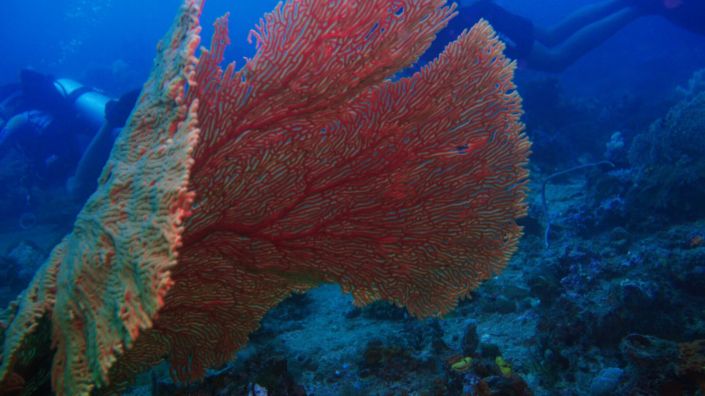

Nine dive sites · 2 to 40 m
Where we dive
From calm reef at 5 m to Siargao's Pacific cavern at 40 m. Two dives with gear and boat from ₱5,000.
Nine dive sites
Each bar shows how deep a site goes. Tap a site to see what lives there and what to expect from the current.
Currents and visibility change with the tide and the swell. We pick the site on the day.

Siargao's signature dive
Blue Cathedral
A cavern on the Pacific side where light falls through the rock in beams. On clear days you can see 80 m and more, with jacks, trevally and barracuda cruising past the entrance.
Day trips & prices
Prices per person, including gear, the boat and the marine fee. Tap + for details and booking.
For divers gear and boat included
Two dives at sites we pick each morning for the best conditions, like Jacking Horse, Stimpy's, Rock Island or Semibayan. Boats leave around 9:00 and 13:30, with never more than seven divers on board. See all dive sites
You need: an Open Water certification. Last dive more than six months ago? Start with the Refresher.
Siargao's cavern on the Pacific side, down to 40 m, where light falls through the rock in beams. Expect moderate to strong current and surge. We do a check dive with you first.
You need: an Advanced certification and good air consumption.
One dive on the same reefs after dark, with a torch in your hand and a guide beside you.
You need: an Advanced certification.
A relaxed pool session to shake off the rust, then two ocean dives with a guide.
You need: a diving certification from any agency.
Not diving? join the boat
Join the boat and snorkel over shallow reef with a guide while the divers are below.
You need: to feel comfortable in the water. No certification.
Swim with a mermaid tail. A favorite with kids, and adults love it too.
You need: to be comfortable swimming.
Ride along with your diving friends, enjoy the ocean and the surface breaks between dives.
You need: nothing but sunscreen.
Gear rental per day. Small gear only, since every dive with us is guided:
See you on the boat.
Message us with your dates and what you'd like to do. We're quick on WhatsApp, even in the evening.